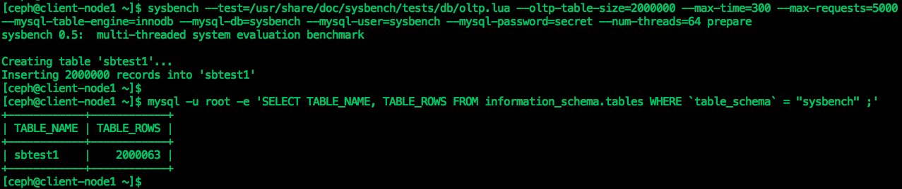
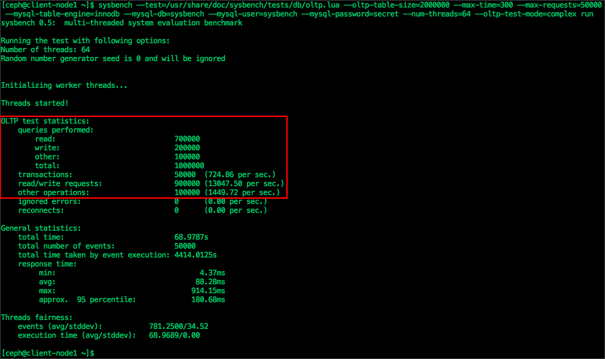

Module 6 - MySQL Database on Ceph#
In this module we will learn how to use Ceph Block Device as a persistent storage for MySQL database.
Note
Before proceeding with this module make sure you have completed Module-2 and Module-3, which means you should have a running Ceph cluster and client-node1 is configured to be Ceph client.
During the course of this module, we would be using client-node1 machine, installing MySQL database and using Ceph block storage for database storage.
- From
mgmtnode , login toclient-node1machine
$ ssh client-node1- Verify Ceph cluster is accessible by rbd user
$ ceph -s --id rbd- Create Ceph block device with name
mariadb-disk1of size 10G
$ rbd create mariadb-disk1 --size 10240 --image-feature layering --id rbd- Verify block device that we have just created
$ rbd ls --id rbd
$ rbd info mariadb-disk1 --id rbd- Map
mariadb-disk1block device onclient-node1
$ sudo rbd map mariadb-disk1 --id rbd- Verify mapped block device
$ rbd showmapped --id rbdFrom the above command output, make a note of mapped device name for mariadb-disk1 block device. In most of the cases it's /dev/rbd1.
- On the mapped device, create xfs filesystem and mount it on
/var/lib/mysqldirectory and verify
$ sudo mkfs.xfs /dev/rbd1
$ sudo mkdir /var/lib/mysql
$ sudo mount /dev/rbd1 /var/lib/mysql
$ sudo ls -l /var/lib/mysql ; sudo df -h /var/lib/mysqlNext , we will install MariaDB which is a community-developed fork of the MySQL relational database management system.
- Add MariaDB configuration file
$ sudo wget https://raw.githubusercontent.com/red-hat-storage/ceph-test-drive-bootstrap/master/mysql-module/my.cnf -O /etc/my.cnf- Install MariaDB server
$ sudo yum install -y mariadb-server- Start and MariaDB service
$ sudo systemctl start mariadb ; sudo systemctl enable mariadb- Verify MariaDB service that it's running
$ sudo systemctl status mariadb- First interaction with database
$ mysqladmin -u root version
$ mysql -u root -e 'SHOW DATABASES'- You should see output similar as shown below
[ceph@client-node1 ~]$ mysqladmin -u root version
mysqladmin Ver 9.0 Distrib 5.5.52-MariaDB, for Linux on x86_64
Copyright (c) 2000, 2016, Oracle, MariaDB Corporation Ab and others.
Server version 5.5.52-MariaDB
Protocol version 10
Connection Localhost via UNIX socket
UNIX socket /var/lib/mysql/mysql.sock
Uptime: 41 min 21 sec
Threads: 1 Questions: 1000769 Slow queries: 0 Opens: 65 Flush tables: 2 Open tables: 90 Queries per second avg: 403.373
[ceph@client-node1 ~]$
[ceph@client-node1 ~]$
[ceph@client-node1 ~]$ mysql -u root -e 'SHOW DATABASES'
+--------------------+
| Database |
+--------------------+
| information_schema |
| mysql |
| performance_schema |
| test |
+--------------------+
[ceph@client-node1 ~]$- Verify MySQL is using Ceph block storage
$ sudo ls -l /var/lib/mysql ; sudo df -h /var/lib/mysqlAt this point we have a running MySQL database instance on top of Ceph Block Storage. Now let's do database reads/writes.
- Install Sysbench (a popular MySQL benchmarking tool)
$ sudo yum install -y http://repo.percona.com/release/7/RPMS/x86_64/sysbench-0.5-6.el7.x86_64.rpm- For sysbench create a database, user and grant necessary access
$ mysql -u root -e "CREATE DATABASE sysbench;"
$ mysql -u root -e "CREATE USER 'sysbench'@'localhost' IDENTIFIED BY 'secret';"
$ mysql -u root -e "GRANT ALL PRIVILEGES ON *.* TO 'sysbench'@'localhost' IDENTIFIED BY 'secret';"- Using Sysbench , prepare testing database
$ sysbench --test=/usr/share/doc/sysbench/tests/db/oltp.lua --oltp-table-size=2000000 --max-time=300 --max-requests=5000 --mysql-table-engine=innodb --mysql-db=sysbench --mysql-user=sysbench --mysql-password=secret --num-threads=64 prepare- Verify sysbench table rows created during prepare step
$ mysql -u root -e 'SELECT TABLE_NAME, TABLE_ROWS FROM information_schema.tables WHERE `table_schema` = "sysbench" ;'-
You should see similar output, as shown below 
-
Open a new SSH session to
mgmtnode and runwatch ceph -scommand to view real time read and write operations to Ceph cluster. - From
client-node1using Sysbench tool , perform read and write (mix) operation
$ sysbench --test=/usr/share/doc/sysbench/tests/db/oltp.lua --oltp-table-size=2000000 --max-time=300 --max-requests=50000 --mysql-table-engine=innodb --mysql-db=sysbench --mysql-user=sysbench --mysql-password=secret --num-threads=64 --oltp-test-mode=complex run- You should see almost similar output, as shown below 
At this point we have successfully tested MySQL OLTP transactions which are stored in Ceph Block Storage Device.
This is it, we have reached to end of Module-6. In this module you have learned how MySQL database can be deployed on Ceph Block Storage